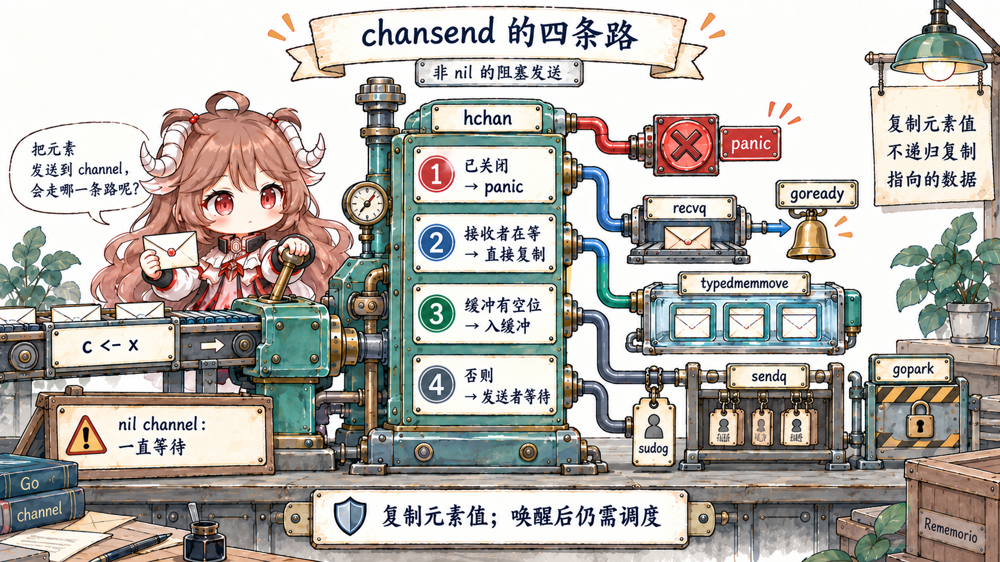
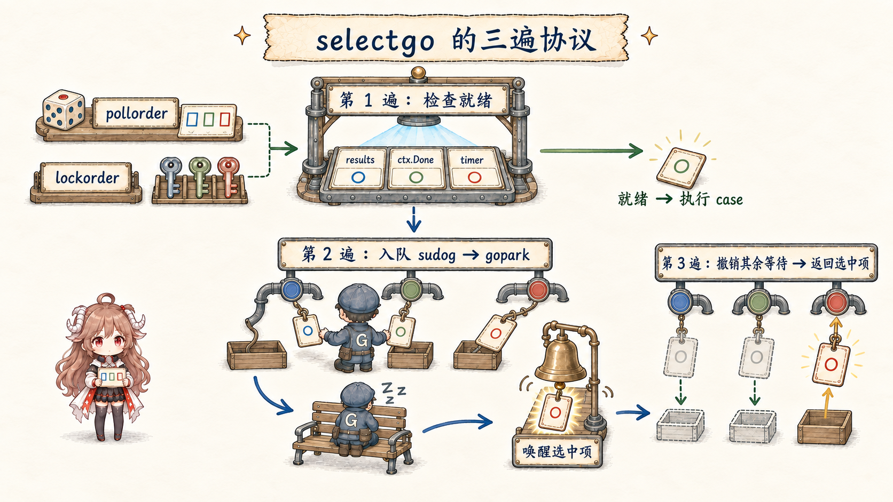
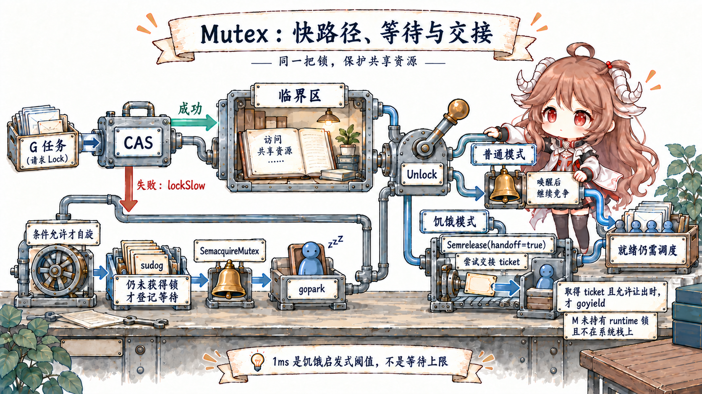

阅读契约：先不讨论谁“更快”。读完前半篇，你应该能根据一句普通话做选择：数据要交给另一个 goroutine，就先想 channel；多段代码要共同保护一份状态，就先想锁。后半篇再解释它们阻塞、唤醒和建立内存顺序的源码路径。
语言层先看 Go Memory Model 给出的同步保证；源码细节再固定到 Go 1.26.0 tag 的 runtime/chan.go、 runtime/select.go、 internal/sync/mutex.go 与 runtime/sema.go。 队列形状、状态位、1ms 阈值和直接交接只是当前 gc runtime 的实现证据，不是业务代码可以依赖的固定常数。
一、先看两个完全不同的并发问题
fetchd 里，worker 抓完网页后，要把一份 fetchResult 交给聚合器。这里发生的是工作成果转交：发送者把值放出去，接收者拿到后继续处理，channel 很自然。
另一个需求是让所有 worker 给同一个“成功数”加一。这里没有成果转交，只有多段代码共同修改一份状态；用 Mutex 把“读—改—写”包起来通常更直接。
因此，不要从“channel 还是锁更快”开始，而要先问：谁拥有数据？数据是否要换主人？拥塞时谁应该等待？结束信号怎样传播？ 这些问题决定并发协议，语法只是协议的实现工具。
| 问题形状 | 优先工具 | 显式表达 | 主要失败边界 |
|---|---|---|---|
| 工作项或结果转交给另一个 goroutine | channel | 所有权流向、排队、容量、关闭 | 阻塞发送、泄漏、关闭协议 |
| 在多个事件中选择一个并支持取消 | select + channel/context | 就绪集合与退出路径 | 永远不就绪的 case、错误的 default |
| 短临界区内维护同一份 map/counter/cache | sync.Mutex | 谁可访问共享状态 | 持锁过久、锁顺序、复制 Mutex |
| 无锁读取或单变量原子状态 | sync/atomic | 单个内存位置的原子操作 | 跨字段不变量被拆散 |
表格把刚才的判断扩成四种常见形状。channel 内部也有锁；Mutex 竞争时也会把 goroutine park。区别不在“一个无锁、一个阻塞”，而在业务层暴露的协议。 如果为了保护 map 而造一条命令 channel，还要维护专属 goroutine、请求/响应和退出协议；如果用 Mutex 模拟任务队列，又会把等待、容量与所有权藏进条件变量和字段。
二、hchan 同时保存缓冲区与等待者
一次 fetchd 请求的结果交接：
handler 创建容量为 N 的结果 channel
→ 每个 worker 先独占自己的 fetchResult
→ send 能直接交给接收者，就当场复制
→ 否则有空位就复制进 buffer
→ 两条路都不通，发送者才等待
→ handler 收到 N 份结果后负责编码
make(chan fetchResult, n) 最终创建一个 runtime.hchan。它不仅是“一个队列”：qcount/dataqsiz 描述环形缓冲，
sendx/recvx 是写读位置，sendq/recvq 保存阻塞发送者和接收者，closed 记录关闭状态，lock 保护这些字段和相关 sudog。
可以先把字段分成四组读：buffer 里有多少格；下一次从哪里读写；谁因没有配对而等待；channel 是否关闭以及谁保护这些状态。 “结果换了主人”是业务协议；若结果含 slice、map 或 pointer，发送仍只复制说明卡，底层对象可能继续共享。
type hchan struct {
qcount uint
dataqsiz uint
buf unsafe.Pointer
elemsize uint16
closed uint32
elemtype *_type
sendx uint
recvx uint
recvq waitq
sendq waitq
lock mutex
}2.1 makechan 的分配取决于元素里有没有指针
元素没有 GC 指针时，hchan 与 buffer 可以一次连续分配；元素含指针时，header 与按元素类型扫描的 buffer 分开分配；无缓冲或零尺寸元素只需要 header。
这是 GC 扫描与布局优化，不改变语言层的 send/receive 语义。容量一旦建立，dataqsiz 在 channel 操作期间不再变化。
2.2 chansend 的四条路
编译后的 c <- x 进入 chansend1，再以 block=true 调用 chansend。nil channel 会永久 park；非 nil channel 在锁内依次判断关闭、等待接收者、buffer 空位，最后才把发送者挂入等待队列。

lock(&c.lock)
if c.closed != 0 {
unlock(&c.lock)
panic(plainError("send on closed channel"))
}
if sg := c.recvq.dequeue(); sg != nil {
send(c, sg, ep, func() { unlock(&c.lock) }, 3)
return true
}
if c.qcount < c.dataqsiz {
qp := chanbuf(c, c.sendx)
typedmemmove(c.elemtype, qp, ep)
c.sendx = (c.sendx + 1) % c.dataqsiz
c.qcount++
unlock(&c.lock)
return true
}有等待接收者时，数据绕过 buffer
即使是 buffered channel，只要 recvq 已有接收者，send 就通过 sendDirect 把发送元素直接复制到接收者的目标地址，随后解锁并 goready 那个 G。
因此 buffer 是没有配对接收者时的排队空间，不是每个值都必须经过的邮箱格。
发送复制元素值，不递归复制元素指向的对象
buffer 路径的 typedmemmove(c.elemtype, qp, ep) 与直接交付路径都复制 channel element。
对 fetchResult 这样的纯值 struct，这会得到独立字段；若元素含 slice、map 或 pointer，复制的是 descriptor/pointer，底层对象仍可能共享。这正接上第二篇的值语义边界。
2.3 满 channel 怎样把发送者变成 waiting G
没有接收者、buffer 又满时，chansend 获取一个 sudog，把发送元素地址、当前 G 与 channel 关联起来，入 sendq，再调用
gopark(chanparkcommit, &c.lock, waitReasonChanSend, ...)。park commit 在安全的状态转换点释放 channel lock；M/P 可以继续执行别的 G。
gp := getg()
mysg := acquireSudog()
mysg.elem.set(ep)
mysg.g = gp
mysg.c.set(c)
gp.waiting = mysg
c.sendq.enqueue(mysg)
gp.parkingOnChan.Store(true)
gopark(chanparkcommit, unsafe.Pointer(&c.lock),
waitReasonChanSend, traceBlockChanSend, 2)
sudog 是“G 在某个同步对象上的一次等待记录”，不是 goroutine 本身。一个 G 同时只能执行一条指令，却可能因 select 在多个 channel 上各有一个 sudog。
被唤醒也只是从 waiting 变回 runnable；第三篇讲过，它仍需经过调度才能继续。
2.4 chanrecv 对称，但满 buffer 有一条交换路径
receive 在锁内先处理 closed+empty；再看 sendq。如果有等待发送者：无缓冲 channel 直接从 sender stack 复制；满缓冲 channel 则从 recvx 取走旧值，同时把等待发送者的值写回同一格，推进环形索引并唤醒 sender。
这样 queue 仍保持满，但最老元素被交付，阻塞发送完成。
// Buffered channel is full; qp is both queue head and next tail.
qp := chanbuf(c, c.recvx)
typedmemmove(c.elemtype, ep, qp) // queue → receiver
typedmemmove(c.elemtype, qp, sg.elem.get()) // sender → queue
c.recvx++
c.sendx = c.recvx
goready(sg.g, skip+1)容量是并发协议，不是随手调大的性能旋钮
fetchd 使用 make(chan fetchResult, len(targets))，所以每个 worker 即使在 handler 开始收集前完成，也能放下一个结果；这避免响应取消后 worker 因无人接收而泄漏。
代价是聚合器变慢时，最多积压一整个 batch。容量 0 强制 rendezvous；小容量早一点把压力传回生产者；大容量吸收 burst，却增加内存、排队年龄和故障时丢弃成本。
2.5 close 是广播状态变化，不是释放 channel
closechan 把 closed 置 1，取出所有接收者并让它们以零值、ok=false 醒来；再取出所有发送者，让它们醒来后 panic。runtime 在释放 channel lock 之后才逐个 goready，避免持锁改变别的 G 状态。
已缓冲的值仍会先被接收，直到 closed+empty 才返回零值。
因此 close 的工程契约通常是“发送方/拥有方关闭”，接收方不猜测还有没有生产者。多个 sender 争着 close，需要额外的 owner、sync.Once 或聚合协议；recover 不是关闭协调机制。
三、selectgo 是一个三遍协议
select {
case results <- result:
case <-ctx.Done():
return
}
多 case select 不会创建多条 goroutine，也不会让所有 ready case 一起执行。runtime 先生成随机 pollorder，再按 hchan 地址生成稳定的 lockorder，以统一顺序锁住涉及的 channel，避免相反锁序。
对这段业务代码，runtime 只需回答三件事：现在有没有一个 case 能走；都不能走时怎样让同一个 worker 同时登记两种等待； 其中一个赢了以后怎样撤掉另一张等待票。下面的三遍扫描正好对应这三个问题。

Pass 1：按随机顺序找已经就绪的 case
receive case 依次检查等待 sender、buffer 数据和 closed；send case 检查 closed、等待 receiver 和 buffer 空位。找到一个就直接执行。 随机 pollorder 降低源码顺序偏置，但不是跨 goroutine FIFO、公平 SLA 或优先级机制。带 default 的非阻塞 select 若没有 ready case，会解锁并返回 default。
Pass 2/3：一个 G 入多个队，醒来后清理 losers
没有 ready case 时，runtime 为每个非 nil channel 获取一个 sudog，按 lockorder 串到 gp.waiting，分别入 sendq/recvq，然后 gopark。
某个 channel 赢得唤醒竞争后，selectDone 防止另一个 case 重复唤醒同一 G。恢复后第三遍重新加锁，从其他队列移除失败 sudog，释放所有记录，并返回 winner 索引。
// pass 1: poll ready cases in permuted order
for _, casei := range pollorder { /* recv/send/buffer/closed */ }
// pass 2: enqueue one sudog for every participating channel
sg := acquireSudog()
c := cas.c
sg.g = gp
sg.isSelect = true
sg.c.set(c)
c.recvq.enqueue(sg) // or sendq
gopark(selparkcommit, nil, waitReasonSelect, traceBlockSelect, 1)
// pass 3: remove every unsuccessful sudog
c.recvq.dequeueSudoG(sglist) // or sendq
releaseSudog(sglist)四、sync.Mutex 的快路径只有一次 CAS
mu.Lock()
counts["completed"]++
mu.Unlock()
Go 1.26 的 public sync.Mutex 把实现委托给 internal/sync.Mutex，核心只有 state int32 与 sema uint32。
无竞争 Lock 用 CAS 把 state 从 0 改为 mutexLocked；成功即可返回，所以短且低竞争的临界区不会进入 runtime 等待表。
这三行的业务含义是：任何时刻只有一个 worker 能完成“读取旧值、加一、写回”这组动作。CAS、state 与 semaphore 只是 Mutex 在“没人争”和“有人争”时维持这个承诺的两条实现路径。

func (m *Mutex) Lock() {
if atomic.CompareAndSwapInt32(&m.state, 0, mutexLocked) {
return
}
m.lockSlow()
}
func (m *Mutex) Unlock() {
new := atomic.AddInt32(&m.state, -mutexLocked)
if new != 0 {
m.unlockSlow(new)
}
}state 同时编码 locked、woken、starving 与 waiter count
低三位分别表示 locked、woken、starving，其余高位记录等待者数量。lockSlow 可以短暂 active spin；拿不到就用 CAS 登记 waiter，调用
runtime_SemacquireMutex(&m.sema, queueLifo, ...)。再次入队的 waiter 可放到队头，避免被新到达的 running G 一再抢先。
4.1 runtime semaphore 负责不丢失的 sleep/wakeup
runtime/sema.go 的注释特别提醒：不要把它当业务 semaphore；它是给 Mutex 等同步原语用的 sleep/wakeup 机制，保证每次 sleep 与一个 wake 配对，即使 wake 在 race 中先发生。
地址 hash 到 251 个 semaRoot；同一地址的 sudog 成队列，不同地址以 treap 管理。
if cansemacquire(addr) { return }
s := acquireSudog()
root := semtable.rootFor(addr)
root.nwait.Add(1)
if cansemacquire(addr) { /* consume wake without sleeping */ }
root.queue(addr, s, lifo)
goparkunlock(&root.lock, reason, traceBlockSync, 4+skipframes)normal 模式争性能，starvation 模式保尾延迟
normal 模式按 FIFO 排队，但被唤醒者不直接拥有锁，会与已经在 CPU 上的新到达 G 竞争；后者可能更快。某 waiter 等待超过内部
starvationThresholdNs = 1e6 后会请求 starvation 模式：Unlock 用 Semrelease(handoff=true) 把 ticket 与 P 的运行机会直接交给队首 waiter，并在安全时 goyield。
waiter 是最后一个或等待时间又短于阈值时，锁会退出 starvation 模式，因为直接交接吞吐更差。这个 1ms 是 Go 1.26.0 源码中的启发式阈值，可能随版本和平台调整；它不是“Lock 最多等 1ms”的保证。
五、两种工具都建立 happens-before，但边不同
| 同步操作 | Memory Model 保证 | 容易误读的地方 |
|---|---|---|
| channel send → 对应 receive 完成 | send synchronized before receive completion | 只覆盖配对通信，不让任意共享对象自动无 race |
close(c) → 因关闭返回零值的 receive | close synchronized before that receive | 关闭不等于所有 sender 都已停止 |
| 容量 C 的第 k 次 receive → 第 k+C 次 send 完成 | buffer 容量可形成计数 semaphore 顺序 | buffered send 完成不等于消费者已处理 |
第 n 次 Unlock → 后续第 m 次 Lock 返回 | 临界区写入对后续持锁者可见 | 未成功的 TryLock 没有同步效果 |
正确性建立在这些边上，不建立在“机器通常会及时刷新缓存”上。channel 和 Mutex 都不能原谅绕开协议的并发读写；
go test -race 是动态证据，发现的是实际执行到的 race，未覆盖路径仍需要设计审查。
六、让背压、取消与锁竞争可观察
concurrency_lab_test.go
用 testing/synctest 建立隔离 bubble：容量为 1 的 channel 收到第一个值后，synctest.Wait 能确定所有其他 G 已 durable block，于是测试可断言第二次 send 尚未完成；接收一个值后再 Wait，发送必然恢复。没有 Sleep，也没有“等 10ms 应该够了”的脆弱假设。
synctest.Test(t, func(t *testing.T) {
results := make(chan int, 1)
secondSendCompleted := false
go func() {
results <- 1
results <- 2 // durably blocked while the buffer is full
secondSendCompleted = true
}()
synctest.Wait()
if secondSendCompleted { t.Fatal("no backpressure") }
<-results
synctest.Wait()
if !secondSendCompleted { t.Fatal("sender did not resume") }
})实验命令与证据分工
cd go-runtime/examples/fetchd
go test ./...
go test -race ./...
go test -run TestBufferedChannelAppliesBackpressure
go test -run TestMutexProtectsSharedSummary \
-blockprofile block.out -mutexprofile mutex.out
go tool pprof -top block.out
go tool pprof -top mutex.out
go test -run '^$' -bench BenchmarkCoordinationContracts -benchmem| 证据 | 回答的问题 | 不能单独回答 |
|---|---|---|
synctest | 在可控事件顺序中，谁确实 durable blocked | 真实机器上的竞争成本 |
| block profile | channel、select 等阻塞累计发生在哪里 | 临界区由谁持有 |
| mutex profile | 哪些 unlock 路径造成了锁等待 | 无竞争快路径成本 |
| execution trace | park、unblock、runnable 与运行的时间关系 | 长期低开销趋势 |
| race detector | 本次执行实际碰到的未同步访问 | 未覆盖路径没有 race |
| benchmark | 一个固定契约在当前环境的开销 | channel 与 Mutex 谁“普遍更好” |
七、回到 fetchd 的工程规则
- 用 channel 传递工作与所有权。
fetchResult从 worker 到聚合器只有一个方向，通信本身就是完成信号。 - 用 Mutex 保护同一份短生命周期状态。计数器、map 或 cache 的不变量留在一个临界区里，不必为一次加法制造 actor 协议。
- 把容量当预算。写清允许积压多少项、多少字节和多老；buffer 不是修复慢消费者的无限仓库。
- 每条可能阻塞的 send 都要有退出故事。要么接收者生命周期更长，要么 select 监听
ctx.Done()，要么容量覆盖有界结果。 - close 由拥有发送生命周期的一侧负责。接收者消费到 closed，不负责猜最后一个 sender。
- 不要在持锁时做网络 I/O、channel send 或未知回调。它们把短临界区扩成跨组件等待，并放大锁顺序风险。
- 先用 profile 找等待，再读对应源码。优化目标应是缩短持锁、减少不必要唤醒或修正背压，而不是盲目替换同步原语。
这一篇的可复用结论是：channel 把值移动、排队和唤醒组合成通信协议；Mutex 把对同一状态的访问组合成临界区。两者都依赖 runtime 的 park/ready，选择依据是所有权与 happens-before，而不是一句性能口号。
下一篇会继续沿 fetchResult 的 error 与抽象边界，拆开 interface 的两个 word、typed nil、泛型字典与反射成本。